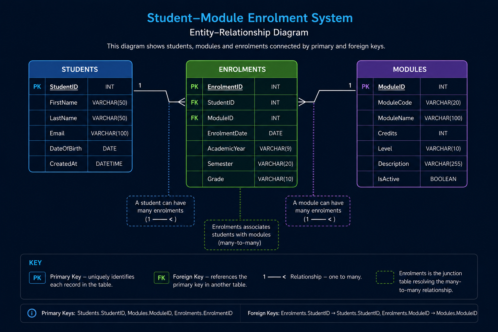

Stack
A stack follows the Last In, First Out principle. The most recently added item is the first item removed.
Typical operations are push, pop and peek.
Push/Pop: O(1)Data Structures, Algorithms, Complexity and Data Analysis
Week 2 Independent Study
Software systems depend on data being organised in forms that support the operations they need to perform. An appropriate data structure can make searching, insertion and removal efficient, while an unsuitable choice can create unnecessary processing and memory costs.
Algorithms must also be evaluated according to how their behaviour changes as the amount of data increases. Asymptotic analysis allows algorithms to be compared independently of a particular machine. Performance should therefore be considered during software design, while profiling should later confirm whether the theoretical model reflects the real workload (Cormen et al., 2022).
A data structure organises values so that particular operations can be performed efficiently. No single structure is best for every task. Selection depends on access patterns, insertion and deletion requirements, ordering, memory use and expected data volume.
A stack follows the Last In, First Out principle. The most recently added item is the first item removed.
Typical operations are push, pop and peek.
Push/Pop: O(1)A queue follows the First In, First Out principle. Items are normally processed in arrival order.
Priority queues modify this rule by allowing urgent work to be processed first.
Enqueue/Dequeue: O(1)A linked list contains nodes that store values and references to other nodes.
It supports dynamic growth, but direct indexed access normally requires traversal from an earlier node.
Indexed Access: O(n)A binary search tree places smaller values to the left and larger values to the right.
Balanced trees support efficient ordered operations, but an unbalanced tree can deteriorate into a list-like structure.
Balanced Search: O(log n)A graph represents relationships through vertices and edges. Edges may be directed, undirected or weighted.
Graphs support route planning, recommendations, dependencies and network analysis.
Depends on representation| Structure | Access Pattern | Main Strength | Typical Application |
|---|---|---|---|
| Stack | Top item only | Predictable LIFO operations | Undo, function calls and history |
| Queue | Front and rear | Preserves processing order | Scheduling and message processing |
| Linked List | Sequential traversal | Flexible insertion and deletion | Dynamic collections |
| Binary Search Tree | Ordered branching | Ordered searching and range access | Indexes and dictionaries |
| Graph | Connected vertices | Represents complex relationships | Maps, networks and dependencies |
Wengrow (2020) emphasises that the practical value of a structure depends on which operations are performed most frequently rather than on one isolated complexity measure.
A structure with favourable theoretical complexity can still perform poorly because of memory overhead, cache behaviour or unsuitable access patterns.
Selecting an appropriate data structure can have a greater effect on performance and maintainability than attempting to optimise individual lines of code.
Data structures should be selected according to the operations a system performs most often.
Linear search checks items sequentially until the target is found or the collection ends.
It works with sorted and unsorted data and is appropriate for small or infrequently searched collections.
Worst Case: O(n)Binary search checks the middle value of a sorted collection and removes half of the remaining search area after each comparison.
It is efficient for large collections, but the data must be sorted and support efficient middle-item access.
Worst Case: O(log n)Compare the target with the middle value.
Determine whether the target is smaller, larger or equal.
Discard the half that cannot contain the target.
Continue until the target is found or no data remains.
Binary search only works correctly when the collection is ordered. The cost of creating and maintaining that order must be included in the design decision (Cormen et al., 2022).
Merge sort divides data into smaller sections, sorts those sections and merges them back together.
It provides predictable performance and is stable, but normally requires additional memory during merging.
Best/Average/Worst: O(n log n)Quick sort selects a pivot and partitions values into groups below and above that pivot.
It often performs well in practice, but poor pivot selection can create quadratic worst-case behaviour.
Average: O(n log n)| Algorithm | Data Requirement | Average Complexity | Main Trade-off |
|---|---|---|---|
| Linear search | None |
O(n)
|
Simple but scales linearly |
| Binary search | Sorted data |
O(log n)
|
Requires ordered, indexable data |
| Merge sort | None |
O(n log n)
|
Predictable but uses extra memory |
| Quick sort | None |
O(n log n)
|
Fast in practice but has an
O(n²)
worst case
|
Search and sorting decisions should account for dataset size, existing order, memory limits, update frequency and the cost of unsuccessful searches.
Faster lookup may require earlier preparation, additional memory or continuous maintenance of sorted data.
Describes how the number of operations grows as the amount of input data increases.
It does not normally represent an exact execution time because hardware, language and implementation affect the result.
Describes how memory requirements grow with the input size.
A fast algorithm may still be unsuitable when it creates excessive temporary data or exceeds available memory.
O(1)
O(log n)
O(n)
O(n log n)
O(n²)
Insert a graph comparing constant, logarithmic, linear, linearithmic and quadratic growth as input size increases.
Big-O notation describes growth rather than complete real-world performance. Execution can also be affected by constant factors, memory access, caching, input distribution and dataset size.
An
O(n)
implementation may outperform an
O(log n)
implementation on a very small dataset because
complexity notation removes constant costs and
implementation details.
Complexity analysis should guide design decisions rather than replace benchmarking and profiling with representative data.
Complexity analysis allows developers to identify solutions that may become impractical as user numbers and data volumes increase.
Big-O predicts scalability. Profiling measures the performance of a specific implementation under a particular workload.
File formats provide portable ways to exchange and store data. The appropriate format depends on whether the information is tabular, nested, strongly typed or intended for communication with a web service.
CSV stores tabular information as plain text. Each line represents a row, while delimiters separate individual values.
JSON represents information using objects, arrays, strings, numbers, Boolean values and null values.
| Requirement | CSV | JSON |
|---|---|---|
| Flat tabular data | Well suited | Supported but more verbose |
| Nested information | Poor support | Well suited |
| Web API communication | Possible | Commonly used |
| Strong schema enforcement | No | No, unless additional validation is used |
| Human readability | Good for simple data | Good for structured data |
CSV and JSON provide data representation, but they do not independently provide indexing, concurrency control, validation, querying or reliable multi-step transactions.
Selecting an appropriate exchange format reduces conversion work and helps preserve the intended structure of data between systems.
CSV is most appropriate for straightforward tables, while JSON is better suited to nested structures and API communication.
Relational databases organise data into tables containing rows and columns. Relationships are formed using primary and foreign keys.
SQL is used to define, retrieve, modify and control the stored information.
NoSQL describes non-relational approaches such as document, key-value, column-family and graph databases.
These systems may support flexible schemas, distributed operation and horizontal scaling.

Uniquely identifies each record within a table.
References a key in another table and creates a relationship between records.
Prevents relationships from referring to records that do not exist.
Creates an additional lookup structure that can improve retrieval speed but increases storage and update cost.
A transaction groups related database operations into one logical unit. A transfer between bank accounts, for example, should not remove money from one account unless it can also add the amount to the other.
All operations succeed together or the entire transaction is reversed.
The transaction preserves defined rules and valid database state.
Concurrent transactions should not interfere in ways that produce invalid results.
Committed changes remain stored after a system failure.
A flexible NoSQL schema can support rapid change, but weaker database-level constraints may move validation and consistency responsibilities into application code.
Database selection should reflect consistency, scalability, relationship complexity, query patterns and operational expertise rather than following a technology trend.
Relational and NoSQL databases address different modelling and operational requirements. Neither category is universally superior.
pandas provides DataFrame and Series structures for loading, cleaning, reshaping, grouping and analysing structured data.
It is useful for CSV files and database query results, although memory use can become restrictive when datasets are much larger than available RAM (pandas Development Team, 2026).
NumPy provides efficient multidimensional arrays and vectorised numerical operations.
Vectorisation can reduce slow explicit Python loops, but some operations create temporary arrays and increase memory use (NumPy Developers, 2026).
Matplotlib provides detailed control over chart structure, axes, labels and visual presentation.
This flexibility supports customised visualisations but can require more configuration.
Seaborn builds on Matplotlib and offers higher-level functions for statistical visualisation.
It can produce effective exploratory charts quickly, but chart selection and interpretation still require human judgement.
Read data from a file, API or database.
Handle missing values, duplicates and invalid records.
Group, transform and calculate relevant measures.
Present findings using appropriate tables, charts and written interpretation.
A visualisation should communicate a specific finding rather than provide decoration. Chart type, scales, labels and context affect the conclusions a reader may draw.
Software can calculate and visualise patterns, but it cannot determine automatically whether those patterns are meaningful, causal or ethically appropriate to use.
Data professionals must combine technical processing with critical interpretation, documentation and transparent communication.
Analysis is not complete when a chart is produced. The method, assumptions, limitations and meaning of the result must also be explained.
The most appropriate technical solution depends on the operations a system performs most frequently. Data structures, algorithms, storage formats, databases and analysis tools should therefore be selected together rather than as isolated technologies.
Theoretical complexity supports early design decisions, while representative testing confirms whether those decisions perform effectively in practice. A solution that is theoretically efficient may still be unsuitable when it introduces excessive memory use, weak data integrity or unnecessary maintenance complexity.